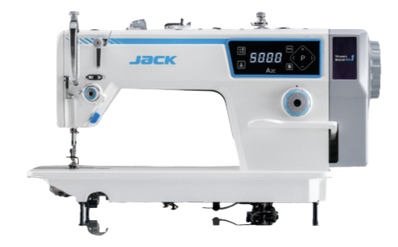
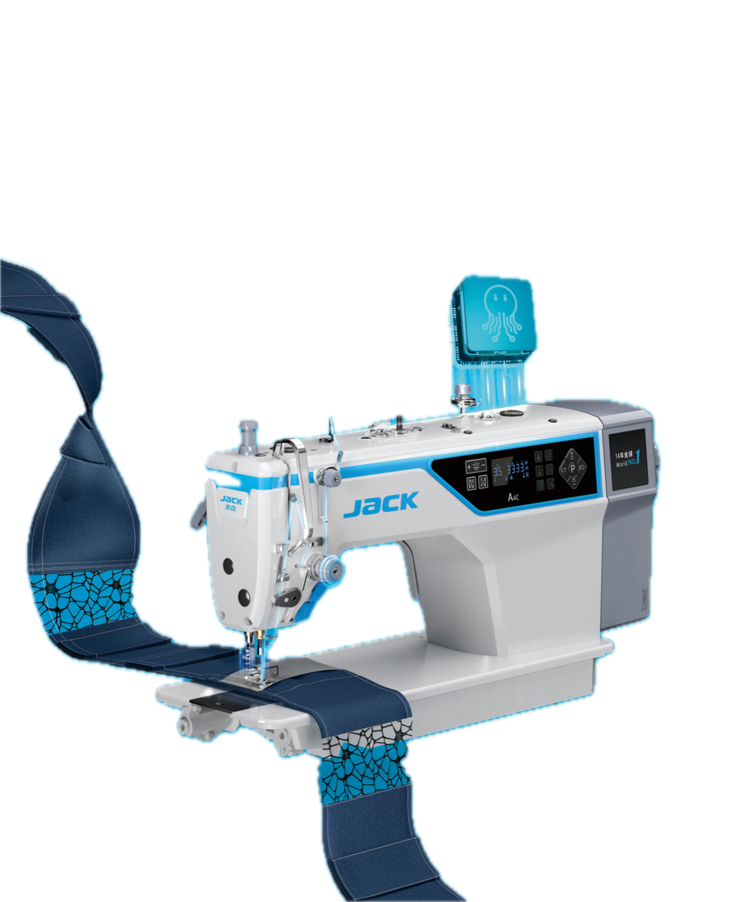
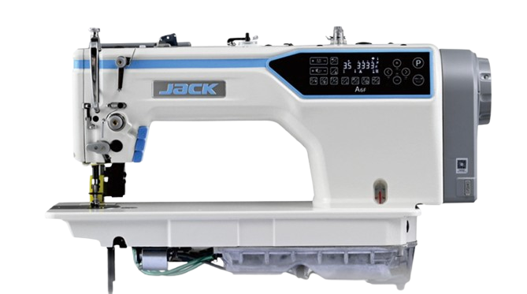
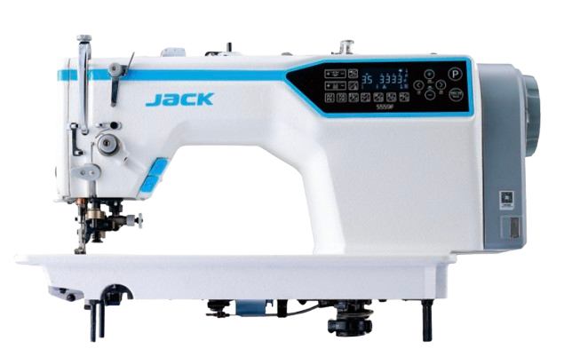
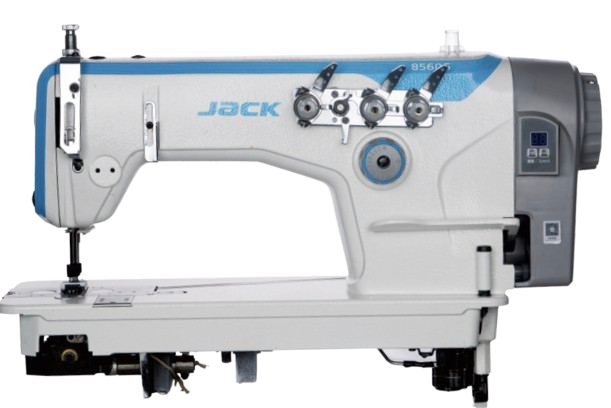

Straight stitch.
Serious intelligence.
Six lockstitch machines, from the AI-driven AMH2 flagship down to focused single-purpose heads for edge cutting and chain stitching. Every one built to keep a single needle running at full speed, all shift long.
Unlock the potential
of all fabrics.
AMH2 pairs an Octopus Dual-Core AI chip with a Vigorous Ape Dual-Drive motor to sense fabric and seam changes as they happen, then re-tune penetration force and feeding force in real time — so the machine keeps sewing without stopping to readjust, whatever the fabric.
- Octopus Dual-Core AI chip: 22 million device data models and 100,000 operations per second
- Vigorous Ape Dual-Drive motor: 4× faster response, 11.3Nm peak torque
- Effortless 18-layer denim stitching, penetrates 100 sheets of A4 plus 10 layers of copper
- Oil-free head keeps the machine and the fabric clean, shift after shift

Five more ways to sew straight.
From cross-seam speed to edge-cutting and chain stitching, each head below is built for a specific job on the line.

Full-speed over cross joint. Mighty Ape Platform motor and Fortress Electric Control pierce 100 layers of paper, lifting cross-seam handling by 14% and overall efficiency by 3.7%.
View spec sheet
An Octopus Nine-brain AI chip works with 0-degree Thread Path Technology to cut thread tension by 30%, reducing thread breakage by 80% and lifting output by around 5%.
View spec sheet
A computerized needle-feed lockstitch head built for consistent stitch quality on multi-layer and heavier panels, with the same digital control panel across the range.
View spec sheet
Computerized edge-cutter lockstitch machine with stepping motor stitch control, noiseless reverse sewing and a 26mm blanking space for shirts, suits, pants and down jackets.
View spec sheet
Power-saving chain stitch machine with an oil-free head and rear puller, available in single, double and triple-needle configurations for denim, T-shirts and umbrellas.
View spec sheet